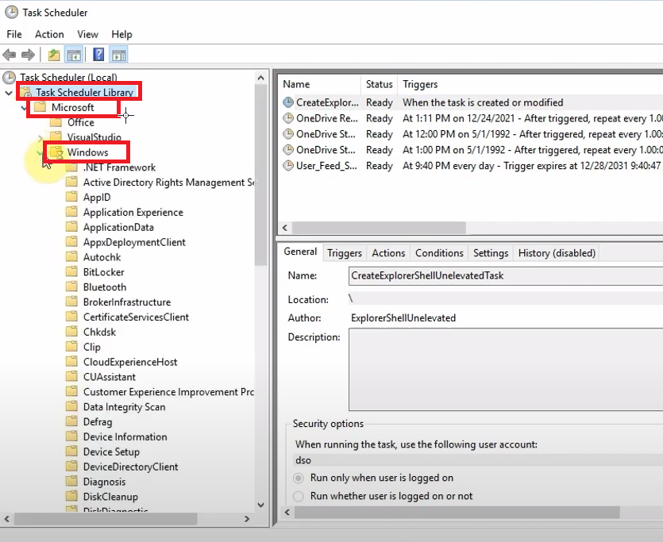

The ultimate goal for this is to replace the dll file which the task is using - The things you'll want
- -Persistence Loader .dll file - i mean the code... look through this if you feel lost lol
- - Create-Install.ps1 - create the installer
- - Get-ScheduledTaskComHandler.ps1 - see open tasks
Following the path below shows the default scheduled windows tasks

---------------------------------------------------------------------------------------------------------------------------------------------------------------------------------------------------------------------
For this example we are going to use WindowsColorSystem- First notes are the name "Calibration Loader" - this does not seem suspicious
- Second is the "Status: Disabled" - we can test persistance
\
The triggers found here are great for persistance.

---------------------------------------------------------------------------------------------------------------------------------------------------------------------------------------------------------------------
Under the actions tab - we can see what happenes when the task is started
We can export the custom handler via XML ()

---------------------------------------------------------------------------------------------------------------------------------------------------------------------------------------------------------------------
Once we have exported it and opened it in notepad or whatever, we look to the bottom

WE HAVE A ComHandler!!
---------------------------------------------------------------------------------------------------------------------------------------------------------------------------------------------------------------------
We now must use this ID to search in Registry Editor


We can find the user specific tasks in the registry
HKEY_CURRENT_USER\Software\Classes\CLSID
------------------------------------------------------------------------------------------------------------------------
Windows Registry Editor Version 5.00
[HKEY_CURRENT_USER\Software\Classes\CLSID{...}\InprocServer32
@="C:\\Evil\\Persistence\\Loader.dll
*** Fill In both {...} with the correct ID***

Then just run the file, it should add to the computer <most times you cant double click it though so go to next note>